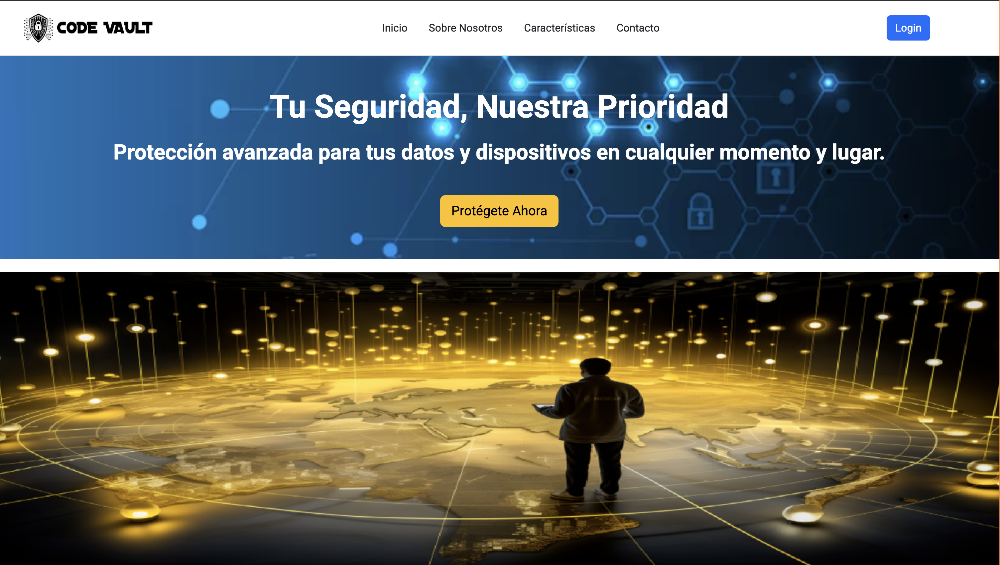

Landing Page
Página de aterrizaje profesional desarrollada con HTML y CSS.
Técnico en Administración de Bases de Datos & Especialista en Ciberseguridad
Técnico en Administración de Bases de Datos y estudiante del Grado Superior en Administración de Sistemas Informáticos en Red (ASIX), con especialización en Ciberseguridad. Actualmente realizo mis prácticas profesionales en Admira (Barcelona), colaborando en la administración, monitorización y protección de sistemas y redes corporativas.
Cuento con experiencia en soporte técnico, resolución de incidencias y atención al cliente en entornos tecnológicos, lo que me ha permitido desarrollar una visión integral entre infraestructura, seguridad y usuario final.
Destaco por mi capacidad analítica, orientación a la mejora continua y adaptación a entornos dinámicos, aplicando buenas prácticas en seguridad informática, administración de servidores Linux/Windows y gestión de redes seguras. Mi objetivo es consolidar mi carrera en el ámbito de la ciberseguridad y la administración de sistemas, contribuyendo al fortalecimiento de la infraestructura tecnológica de las organizaciones.
Página de aterrizaje profesional desarrollada con HTML y CSS.
Proyecto web enfocado en ciberseguridad y servicios de protección digital.
Estoy disponible para incorporación inmediata en Barcelona. Busco consolidar mi desarrollo profesional en el área de sistemas, bases de datos o ciberseguridad.
Contáctame